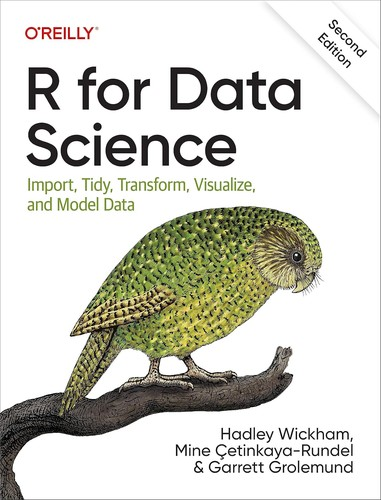
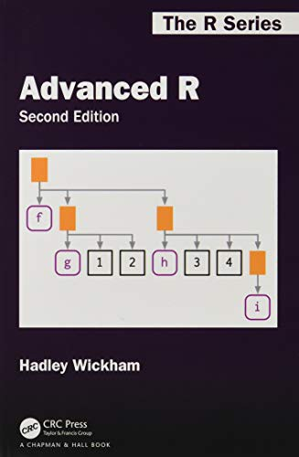
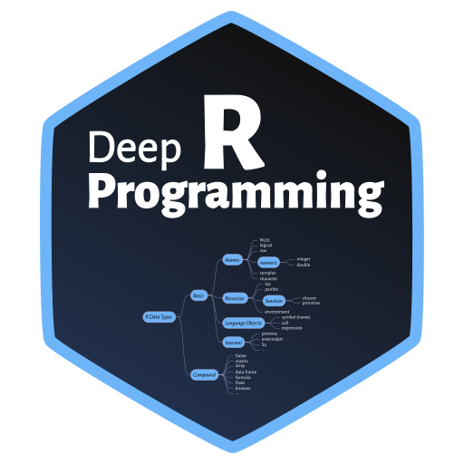
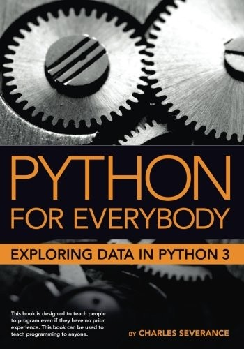
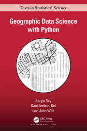
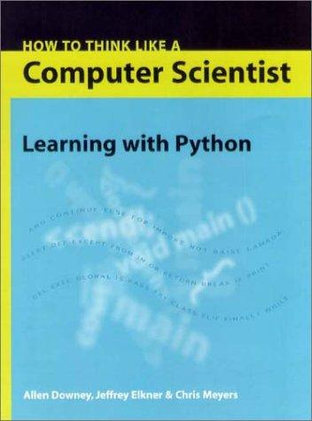
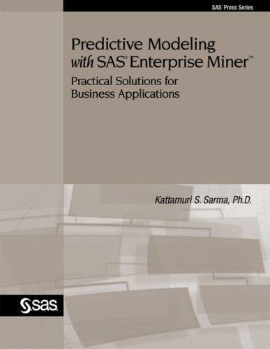
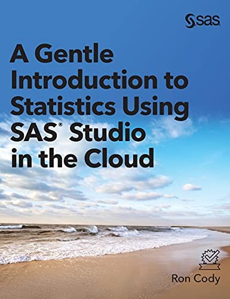
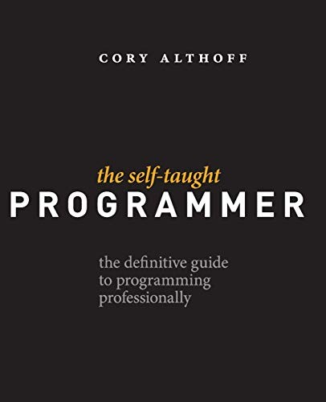

This is where my deeper reading in R really started — less about syntax, more about learning to think in the tidyverse: import, tidy, transform, visualize, model.
Aquí es donde realmente comenzó mi lectura más profunda sobre R — menos sobre sintaxis, más sobre aprender a pensar en el tidyverse: importar, limpiar, transformar, visualizar, modelar.

Wickham again, and it shows. A step up from the basics — into how R actually works under the hood, not just how to use it.
Wickham otra vez, y se nota. Un paso más allá de lo básico — hacia cómo funciona R realmente por dentro, no solo cómo usarlo.

A more rigorous, textbook-style walkthrough of R fundamentals. Good for filling gaps the tidyverse-focused books tend to skip.
Un recorrido más riguroso y de estilo académico por los fundamentos de R. Útil para llenar los vacíos que los libros centrados en el tidyverse suelen dejar.

My starting point for Python, and still a book I'd hand to anyone new to programming. Patient, practical, no wasted motion.
Mi punto de partida con Python, y sigue siendo un libro que le daría a cualquiera que empiece a programar. Paciente, práctico, sin rodeos.

I relied on this heavily building the geospatial features for my real estate pricing project — comprehensive enough that it taught me the concepts, not just the code.
Me apoyé mucho en este libro para construir las variables geoespaciales de mi proyecto de precios inmobiliarios — lo suficientemente completo como para enseñarme los conceptos, no solo el código.

Less about Python specifically, more about learning to think like a programmer. Helped fundamentals click in a way pure syntax tutorials didn't.
Menos sobre Python en sí, más sobre aprender a pensar como programador. Ayudó a que los fundamentos encajaran de una forma que los tutoriales de pura sintaxis no lograban.


Ties directly back to my SAS certifications — a practical, business-first approach to predictive modeling rather than a purely theoretical one.
Se conecta directamente con mis certificaciones de SAS — un enfoque práctico y orientado al negocio para el modelado predictivo, en lugar de uno puramente teórico.

A low-math, point-and-click way into core statistical concepts. Good for building intuition before wrestling with the harder math.
Una forma accesible y con poca matemática de acercarse a los conceptos estadísticos centrales, mediante point-and-click. Útil para construir intuición antes de enfrentarse a las matemáticas más difíciles.

A useful gut-check for anyone building a technical career outside the traditional CS-degree path — the stuff bootcamps and textbooks don't usually cover.
Una verificación de realidad útil para cualquiera que construya una carrera técnica fuera del camino tradicional de una carrera en informática — lo que los bootcamps y los libros de texto normalmente no cubren.